Overview
Inside the Material Editor you can browse, create, edit and assign materials to objects, terrain, etc.
It also allows you to copy existing materials and use them as a starting point for your specific material needs. Materials files (*.mtl) are ideally located in the same folder as the object they were created for. However, as they can be freely assigned to any objects inside your game project, the only restriction is to place them inside the game project folder structure.
Editing materials not only allows you to choose textures and shaders, but also fine-tune placement, animation of textures and tweaking parameters relevant for a chosen shader type.
For more information about material effects, shaders, and texture maps, see the sub-pages of the Legacy Material Editor.
To open the Material Editor, go to Tools → Material Editor.
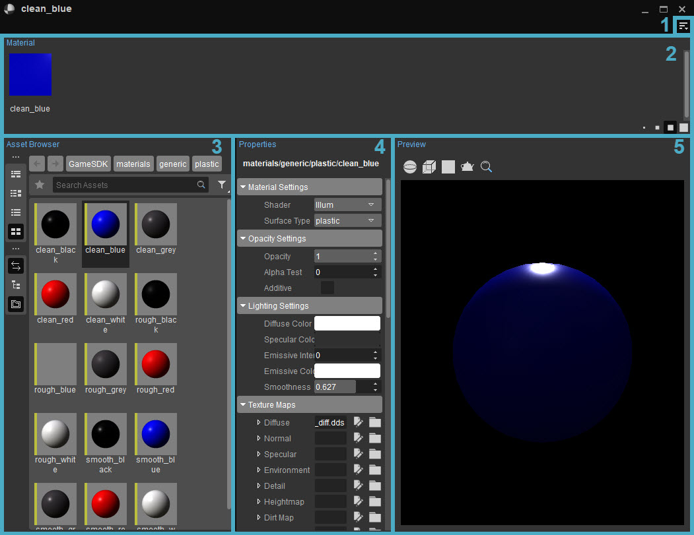
Click on the name of the area names below to learn more about them.
1. Menu
Accessed via the 
File Menu
| Option | Description |
|---|---|
| New | Creates a new material from scratch. |
| Pick Material From Scene | Use the material picker to select and open a material already used in the scene. |
| Open | Open an existing material. |
| Close | Closes the currently selected material. |
| Save | Saves the material. |
| Save As... | Saves the current material under a different name. |
| Recent Files | Open recently opened materials. |
Edit Menu
| Option | Description |
|---|---|
| Undo | Undoes the last action. |
| Redo | Redoes a previously undone action. |
Material Menu
| Option | Description |
|---|---|
| Convert To Multi-Material | Converts the current single material into a multi-material. |
| Convert To Single Material | Converts the current multi-material into a single material. |
| Add Sub-Material | Adds a sub-material to the material. |
| Set Sub-Material Slot Count | Lets you quickly remove the last n number of sub-materials. This does not mean it imposes a limit on the number of sub-materials a material can have; you can still add and remove other sub-materials. |
Toolbars
| Option | Description | ||||
|---|---|---|---|---|---|
| Customize | Opens the toolbar customization window allowing users to customize existing toolbars, and/or create new toolbars within the Material Editor. | ||||
| Lock Toolbars | When disabled, the positions of toolbars and spacers within the Material Editor can be changed by drag and drop. | ||||
| Spacers | The following options allow users to use spacers in positioning their toolbars.
The Spacers menu options are only available when Toolbars → Lock Toolbars is disabled. | ||||
| Toolbars | Lists all default and custom toolbars created for the Material Editor, allowing you to select which toolbar you'd like to hide or display. |
When a tool has a toolbar, whether this is a default one or a custom one, the options above are also available when right-clicking in the toolbar area (only when a toolbar is already displayed).
Window Menu
| Option | Description |
|---|---|
| Panels | Adds the panels in the Material Editor if they are not there. Doesn't do anything if they are. |
| Reset layout | Resets the layout to the default layout. |
Help Menu
| Option | Description |
|---|---|
| Go to documentation | Opens the documentation page for the Material Editor. |
2. Materials Overview
In this panel, the material (or in the case of multi-materials, the sub-materials that are contained in your material) are shown.
3. Asset Browser
Tool-specific Asset Browser panels let users view and edit the assets within the tool that is currently being used. Unlike the stand-alone Asset Browser tool, the assets that are displayed on this panel are pre-filtered by default; meaning it only displays the assets that are relative to the tool itself.
- When the Sync Selection

- You can drag an asset from the standalone Asset Browser and drop it onto the asset picker fields on the Material Editor's Properties panel. If the asset is compatible, e.g. textures, the field will be highlighted in green and the asset will be assigned to it; otherwise, it will be highlighted in red and the asset will not be assigned.
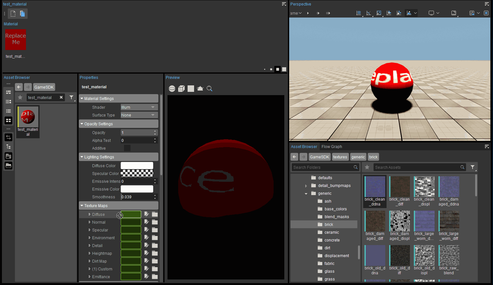
Right Click Menu
When right clicking on a (sub-)material, the following options appear:
| Option | Description |
|---|---|
| Highlight | Highlights objects with this material in the viewport. |
| Rename Sub-Material | Renames the selected sub-material. |
| Reset Sub-Material | Resets the selected sub-material to its original settings. |
| Remove Sub-Material | Removes the selected sub-material. |
| Convert To Multi-Material | Converts the current single material into a multi-material. |
| Convert To Single Material | Converts the current multi-material into a single material. |
| Add Sub-Material | Adds a sub-material to the material. |
| Set Sub-Material Slot Count | Lets you quickly remove the last n number of sub-materials. This does not mean it imposes a limit on the number of sub-materials a material can have; you can still add and remove other sub-materials. |
4. Properties
The Material Editor has basic material properties that are common to all materials, as well as shader parameters that can be adjusted if shaders are enabled.
Material Settings
| Setting | Description | ||||||
|---|---|---|---|---|---|---|---|
| Shader | Here you can select the shader you want to use. Generally you use illum/vegetation/glass shader. For more information, see Shaders. | ||||||
| Surface Type | You can select a surface type for your material here. The surface type sets up what kind of sound will be played or what kind of particle effects will be spawned when you shoot the object.
|
Opacity Settings
These settings are important if using alpha channels for transparency, for example when creating leaves and wire fences.
| Setting | Description | ||||||
|---|---|---|---|---|---|---|---|
| Opacity | With the opacity value you can switch between Alpha Blend and Alpha Test. 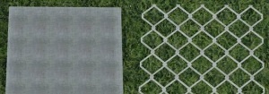 Opacity value: 0-99 -> alpha blend. Opacity value: 100 -> alpha test. With alpha blend you can get very soft and semi transparent results, but it is more expensive than alpha test. | ||||||
| Alpha Test | If you want to use alpha test, which is less expensive, set the opacity value to 100 and the AlphaTest value to 50. 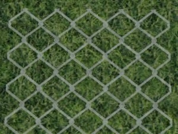 50 is the default value. A value below 50 tends more to the white color of the alpha map. A value above 50 tends more to the black color of the alpha map.
| ||||||
| Additive | When using a semi-transparent material like glass, use the additive function. The material color will be added to the background color. The resulting color will the be brighter. 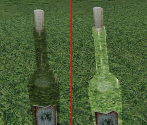 |


Lighting Settings
This section controls the material color and specular settings.
| Setting | Description |
|---|---|
| Diffuse Color | Controls the material diffuse color by double clicking the color square. The default RGB value is 255,255,255 and should usually be left at 255,255,255 for Physically Based Shading (PBS). To get the best quality rendering, it is recommended to always use 255,255,255 diffuse with no color input and adjust the diffuse texture accordingly. Using the slider next to the color you can control the brightness. You can also type in the RGB code in the fields underneath the color spectrum. There is also a color swatch available in the Standard tab. 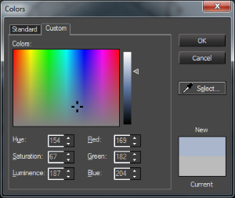 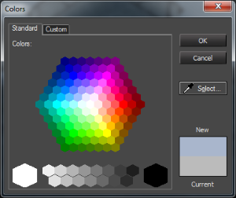 |
| Specular Color | The specular color is the reflective or shiny component of a material when light shines onto the object. To correctly set up PBS materials please see the documentation for Physically Based Shading (PBS). From left to right and top to bottom: midday, evening, night, neutral 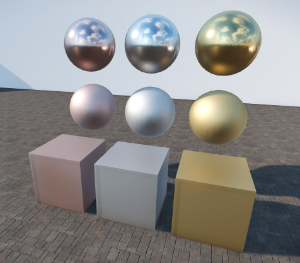 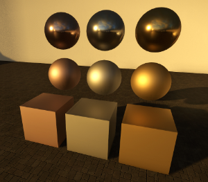 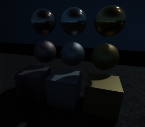 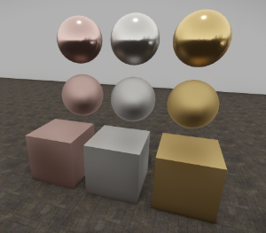 |
| Emissive Color | The Emissive Color defines the color of the emitted light ("glow") when the Emissive Intensity is not zero. In case an emittance map is used, the emissive color gets multiplied with the emittance map color. |
| Emissive Intensity (kcd/m2) | The Emissive Intensity defines how much light gets emitted from the surface (previously known as 'glow'). The intensity is specified in kilonits (same as kcd/m2) which is the physical unit for Luminance. A candle flame has a typical Emissive Intensity of 10 kcd/m2. Please note that for surfaces, emittance is only supported by the Illum shader and is ignored by the Vegetation and HumanSkin shaders. |
| Smoothness | The smoothness defines how rough or glossy a surface is. To correctly set up PBS materials please see the documentation for Physically Based Shading (PBS). Think of it as defining the micro details on a surface, where the normal map defines the macro details. The smoothness map is stored inside the Alpha channel of the normal map (saved with the postfix _ddna). The higher the value you enter for the Smoothness, the tighter the specular highlight will be. In the following picture, from Left to right, we are decreasing the Smoothness value.
|

Texture Maps
In the material editor are different slots for texture maps. With texture maps, users can control different shader effects.
To add a texture to the material slot, click the Browse button ( 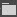
The Texture Map slot layout is fairly straightforward: the left column displays which type of texture map the slot is associated with and the middle column is where the texture map file is located.
Hovering over the name of a texture gives you a preview of that texture.
The table below shows the textures available for the Illum shader.
The types of Texture Maps available will be different depending on which Shader you have selected.
Texture Map | Channels | Description |
|---|---|---|
| Diffuse | RGBA | Defines the albedo color of the surface. Can also contain monochrome Alpha channel to describe alpha transparency. |
| Normal | RGBA | Uses monochrome Alpha Channel (aka Gloss Map) to describe the Surface's Smoothness inside the Physical Based Rendering System. |
| Specular (Reflectance) | The texture representing the specular intensity and color of material highlights defined as the "shininess" and color of specular reflections. | |
| Environment | RGBA | Can be defined custom through slot input or can inherited from the "nearest cubemap." |
| Detail | The texture allowing you to add more details to surfaces. It works like the second material layer and it is not affected by the mapping of the model it is used for. | |
| Heightmap | The texture which is utilized by POM/OBM/Tessellation to give more depth and definition to an object. | |
| Decal | RGBA | A decal that houses an alpha for laying over for example grime or moss on objects. |
| Second Height Map | Used to add a second texture map to create a blending effect. NOTE: only appears when the Blendlayer box in the Shader Gen Params is ticked. Not all shaders display this box. | |
| Second Diffuse Map | RGBA | Used to add a second texture map to create a blending effect. NOTE: only appears when the Blendlayer box in the Shader Gen Params is ticked. Not all shaders display this box. |
| Second Bump Map | Used to add a second texture map to create a blending effect. NOTE: only appears when the Blendlayer box in the Shader Gen Params is ticked. Not all shaders display this box. | |
| Emittance | The Emittance map is used to control what portion of the texture will be set to glow or emit. |
All of these Texture Maps (for example Diffuse, Normal, Specular) have the following options when they're expanded:
| Option | Description | ||||||
|---|---|---|---|---|---|---|---|
| Texture Type | Lets you select the following texture types:
| ||||||
| Filter | These options are deprecated. | ||||||
| Is Projected Tex Gen | |||||||
| Tex Gen Type | Lets you select the following options:
| ||||||
| Tiling | Lets you select the following options:
Note that you currently cannot tile normal or specular maps independently of the diffuse map. This is because of material instancing which saves many draw calls.
| ||||||
| Rotator | With the rotator you are able to create a rotating/shifting texture animation. Choose between three different types of rotation by clicking the option box.
| ||||||
| Oscillator | Like the rotator, the oscillator animates a texture.
|


The rotator and oscillator functions are only available for diffuse and decal textures because of technical limitations.
You can create many interesting effects like animated glow by using the decal slot:

Advanced Settings
Setting | Description |
|---|---|
| Allow layer activation | Enabling this feature will load the material while the layer is loaded. When the layer is not loaded, the material will not be loaded either. For performance reasons, it is recommended to turn this on at all times. |
| 2 sided | Both sides of the face the material is assigned to will be rendered by the engine. You normally use this for objects with alpha channels like leaves which have no thickness. |
| No shadow | Faces the material is assigned to will not cast a shadow. |
| Use Scattering | Deprecated |
| Hide After Breaking | This will make a subset disappear when the object it's attached to breaks procedurally. An example is a liana that disappears when the palm tree it hangs from breaks. |
| Blend Terrain Color | Color information is tinted based on the terrain color. For example, Grass inherits terrain albedo in a use case. |
| Traceable Texture | Material will be applied to Ray Traceable decals and will use an alpha map to verify the texture. |
| Fur Amount | Deprecated |
| Voxel Coverage | Allows you to control voxel opacity for SVOTI integration. |
| Heat Amount | Applies heat to the object to be used in conjunction with the thermal vision effect (r_NightVision=3). |
| Cloak Amount | Deprecated |
Shader Params
The Shader Params differ depending on the shader that is selected. See this page (and subpages) for more detailed information for each separate shader.
Shader Generation Params
The Shader Generation Params differ depending on the shader that is selected. See this page (and subpages) for more detailed information for each separate shader.
Vertex Deformation
The Vertex Deformation feature offers the opportunity to influence geometry. You can choose between different types, and each of them will deform your model in a different way.
Vertex deformation is applied in the direction of the vertex normal.
| Option | Description |
|---|---|
| Deform Type | You can choose between different types, and each of them will deform your model in a different way:
|
| Wave Length | This value sets the wave length of the wave the deformation is based on, equally in all directions; X, Y and Z. A good default value for the wave length is 0.1. |
| Noise Scale | Changes the scale of the noise texture used for the deformation. |
| Wave Type | When set to Sin, the following Wave Parameters appear:
|
Layer Presets
5. Preview
In the Preview panel, you can see what the material you have selected looks like. You can also see the material on several predefined objects, as well as any object in your project, to get a better idea of what it would look like in-game.
When right-clicking on a preview, a context menu appears:
| Option | Description |
|---|---|
| Reset Camera | moves the camera of the Preview back to its default position. |
| Set Custom Preview Model | Lets you choose an object in your project to preview the material on. |
Texture Tooltips
In the new Material Editor, there are two different tooltips that can be displayed, a small one, with many details about the texture, and a large one, that displays the texture image in a bigger window, showing the image in much more detail. This larger tooltip can be displayed by holding CTRL:
Small tooltip:
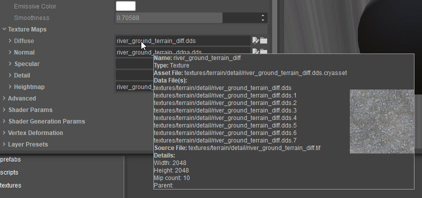
Large tooltip:
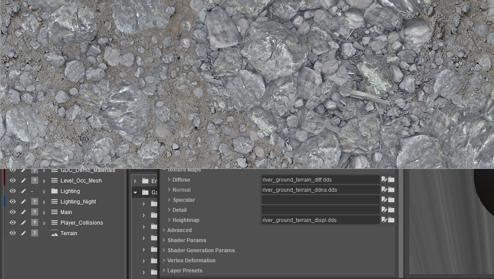